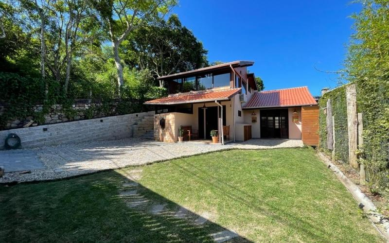

IMOBILIÁRIA PRAIA DO ROSA · ESTUDO EXPERIMENTAL
Um teste 3D construído a partir das fotos.
Entre, caminhe e compare cada ambiente.
Sem planta ou medidas. A distribuição e as ligações foram estimadas.
Não é uma reprodução fiel nem uma visita virtual do imóvel real.